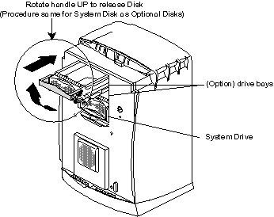

Operating Documentation
Direction 5114045-800, Rev# 10
LightSpeed 4.X Service Information (Advanced)
Operating Documentation |
| Required Persons | Preliminary Reqs | Procedure | Finalization |
|---|---|---|---|
| 1 |
Hard drives come in a special carrier and require no assembly or disassembly. Place the primary system drive in the bottom bay on the front of the computer. The second system (image) disk is placed in the middle drive bay. The host’s hardware automatically assigns SCSI IDs. The primary disk (lowest one) is assigned SCSI ID 1 (dks0d1sN). The one inserted above and in the middle of the drive bay then becomes SCSI ID 2 (dks0d2sN).
| NOTE: | Currently, the top slot in the drive bay is not used. |
Shutdown console power.
Remove the console's front cover. Pull out platform upon on which the computer rests and release any tie-down strap if present.
Remove the locking bar (if found).
| Potential for Injury | |
| Components may be hot. | |
| Wait five minutes after power is off before you continue. Let it cool. |
| You must wear a grounded ESD wrist strap. Place removed electronic parts on or in an antistatic surface. | |
Press both bezel release buttons on front upper sides.
Tilt the cover forward and lift to remove it.
Lift the drive's handle to the horizontal position and gently slide it into the bay. Pushing a drive in with too much force can damage it. Seat the drive carefully but firmly.
When it is flush with the chassis, rotate the handle down to lock it in place.
Illustration 1: Host (Octane) System Drive

If needed, remove the plastic panel for a new bay if adding a disk. Keep it in case it is needed later. Snap a saved panel to the cover if you permanently remove a hard drive from a bay. This insures proper air flow. Do not remove a drive unless you have a replacement or a cover for the bay.
Re-power the system, press [STOP FOR MAINTENANCE] , and use hinv to verify that the host recognizes the hard drive(s).
No finalization required.